Page 1 / 20
Bienvenue en Thaïlande
🇷🇪 Réunion Malin
Mi connais la chaleur… mé la Thaïlande i vaut vraiment le voyage ! 😎
Mi connais la chaleur… mé la Thaïlande i vaut vraiment le voyage ! 😎
Un bon départ, c’est déjà la moitié du voyage ! Mi vérifie tout avant de fermer la valise. 😄
Mi mets tout dans téléphone ek dans le cloud. Comme ça, si le papier i voyage sans moi… mi lé tranquille ! 😂
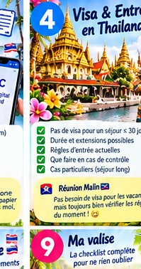
Mi vérifie la durée avant de partir. Pas besoin d’une surprise à l’arrivée ! 😉
Mi compare avant mi clique. Le premier prix vu lé pas toujours le meilleur !
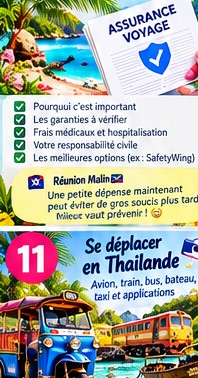
Mi préfère prévoir une assurance avant… plutôt que gérer un gros souci après. 😅
Mi ferai l’eSIM quand mi sera arrivé ? Non non ! Prépare avant de décoller. 😉
Mi garde un peu de cash, mé mi évite de voyager avec tout mon budget dans la poche !
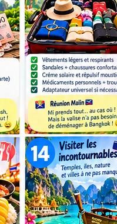
« Mi prends tout, au cas où… » Non. Ta valise n’a pas besoin de déménager à Bangkok ! 😄
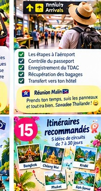
Chaleur + fatigue + décalage… doucement ! Mi arrive, mi respire, mi bois un coup. 😎
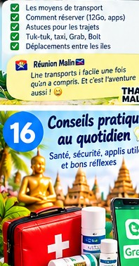
Mi regarde le prix avant de monter. Une petite comparaison peut économiser gros !
Mi choisis selon la zone et le style de voyage. Un bon emplacement, ça change tout !
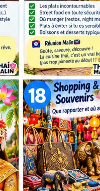
« Mi mange pimenté, mi viens de La Réunion ! » Oui… mais commence doucement ! 🌶️
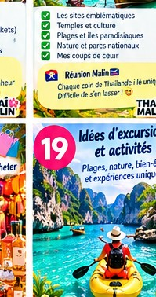
Mi profite, mi respecte, mi garde de la place pour les surprises ! 🇷🇪
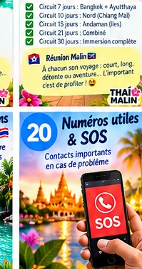
Mi prépare un itinéraire… mé mi garde un peu de liberté pour les coups de cœur !
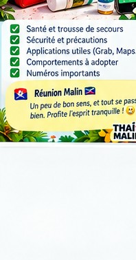
Un peu de bon sens, et tout se passe bien. Profite l’esprit tranquille !
Un sourire, un wai et un peu de respect : mi lé déjà bien accueilli ! 🙏
Mi garde une petite place pour les souvenirs… sinon la valise va encore râler ! 😂
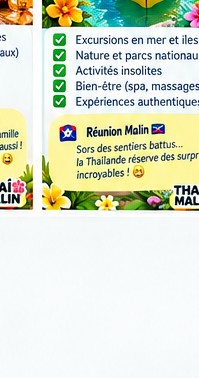
Mi teste, mi découvre, mi profite. C’est ça aussi le voyage !
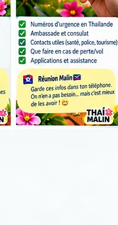
Mi garde les numéros utiles dans le téléphone. On n’en a pas besoin… mais c’est mieux de les avoir !